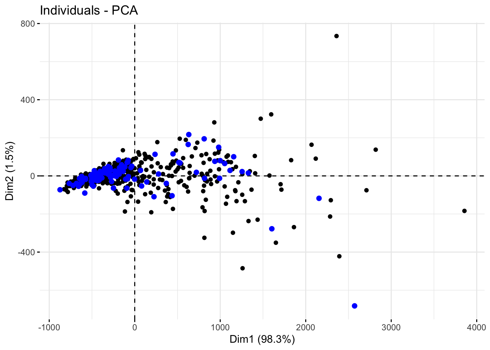

# Paquetes anteriores
library(tidyverse)
library(sjPlot)
library(knitr) # para formatos de tablas
library(skimr)
library(DataExplorer)
library(GGally)
library(gridExtra)
library(ggpubr)
library(cvms)
library(kknn)
library(rpart.plot)
library(rda)
library(klaR)
library(ggord)
theme_set(theme_sjplot2())
# Paquetes AA
library(mlr3verse)
library(mlr3tuning)
library(mlr3tuningspaces)
library(gbm)
library(RWeka)
library(xgboost)
library(lightgbm)
library(FactoMineR)
library(factoextra)
library(rsvd)
library(kernlab)
library(fastICA)16 Componentes principales (CP)
Supongamos que disponemos de una muestra de \(n\) individuos medidos en \(p\) variables diferentes con \(p\) grande. La idea que subyace en los métodos de reducción de la dimensión es construir \(k\) variables artificiales, con \(k << p\), que poseen la misma capacidad explicativa que el conjunto original. De esta forma, cada sujeto pasa de ser representado por un vector de \(p\) dimensiones (que gráficamente resulta difícil de visualizar) por uno de \(k\) dimensiones. Si \(k \leq 3\) resulta posible representar gráficamente la información contenida en todos los sujetos sin pérdida de capacidad explicativa.
En los puntos siguientes se desarrolla el procedimiento de componentes principales que es el más utilizado en la literatura y cuyas aplicaciones más relevantes son la visualización de conjuntos multidimensionales o el pretratamiento de datos para la aplicación de otros algoritmos de aprendizaje automático.
16.1 CP lineales
Consideramos una matriz de variables \(\mathbf{X}\) compuesta por \(p\) variables medidas en \(n\) sujetos que denotamos por:
\[\mathbf{X} = \begin{bmatrix} x_{11}&...&x_{1p}\\ x_{21}&...&x_{2p}\\ ...&...&...\\ x_{n1}&...&x_{np} \end{bmatrix}\]
y cuya matriz de varianzas-covarianzas viene dada por \(\mathbf{\Sigma}\).
El procedimiento de componentes principales fue inicialmente desarrollado por Pearson a finales del siglo XIX y posteriormente por Hotelling en los años 30 del siglo XX. Sin embargo, hasta la aparición de los ordenadores no se empezó a popularizar. Para estudiar las relaciones que se presentan entre \(p\) variables correlacionadas (que miden información común) se puede transformar el conjunto original de variables en otro conjunto de nuevas variables incorreladas entre sí (que no tenga repetición o redundancia en la información) llamado conjunto de componentes principales.
Las componentes principales se obtienen como combinaciones lineales de las variables originales y se van construyendo según el orden de importancia en cuanto a la variabilidad total que recogen de la muestra. De modo ideal, se buscan \(k << p\) variables que sean combinaciones lineales de las \(p\) originales y que estén incorreladas, recogiendo la mayor parte de la información o variabilidad de los datos. Si las variables originales están incorreladas de partida, entonces no tiene sentido realizar un análisis de componentes principales.
Si denotamos por \([\mathbf{y}_1,...,\mathbf{y}_p]\) a las componentes principales, estas se pueden escribir como:
\[\mathbf{y}_j = a_{j1}\mathbf{x}_1 + a_{j2}\mathbf{x}_2 + ... + a_{jp}\mathbf{x}_p = \mathbf{a}_j^{T}\mathbf{x}, \quad j=1,...,p\]
Obviamente, si lo que queremos es maximizar la varianza, como veremos luego, una forma simple podría ser aumentar los coeficientes \(a_{ij}\). Por ello, para mantener la ortogonalidad de la transformación se impone que el módulo del vector \(\mathbf{a}_j^T = (a_{j1},...,a_{jp})\) sea 1, es decir:
\[\mathbf{a}_j^T \mathbf{a}_j = \sum_{i=1}^{p} a_{ji}^2= 1\]
La primera componente se calcula eligiendo \(\mathbf{a}_1\) de modo que \(\mathbf{y}_1\) tenga la mayor varianza posible, sujeta a la restricción \(\mathbf{a}_j^T \mathbf{a}_j = 1\). La segunda componente principal se calcula obteniendo \(\mathbf{a}_2\) de modo que la variable obtenida, \(\mathbf{y}_2\) esté incorrelada con \(\mathbf{y}_1\). Del mismo modo se eligen \((\mathbf{y}_1\),…, \(\mathbf{y}_p)\), incorrelados entre sí, de manera que las variables aleatorias obtenidas vayan teniendo cada vez menor varianza.
Los términos \(\mathbf{a}_1,...,\mathbf{a}_p\) reciben el nombre de “loadings” y definen las componentes de forma única. Los loadings pueden interpretarse como el peso/importancia que tiene cada variable en cada componente y, por lo tanto, ayudan a conocer que tipo de información que recoge cada una de las componentes.
16.1.1 Interpretación geométrica
Una forma intuitiva de entender el proceso de PCA es interpretar las componentes principales desde un punto de vista geométrico. Supóngase un conjunto de observaciones para las que se dispone de dos variables \((\mathbf{X}_1, \mathbf{X}_2)\). El vector que define la primera componente principal sigue la dirección en la que las observaciones tienen más varianza (línea roja). La proyección de cada observación sobre esa dirección equivale al valor de la primera componente para dicha observación.

La segunda componente sigue la segunda dirección en la que los datos muestran mayor varianza y que no está correlacionada con la primera componente. La condición de no correlación entre componentes principales equivale a decir que sus direcciones son perpendiculares/ortogonales.

16.1.2 Extracción de componentes
El primer paso en la obtención de las componentes principales es centrar todas las variables originales, es decir, se resta a cada valor la media de la variable a la que pertenece. Con esto se consigue que todas las variables tengan media cero.
Comenzamos el proceso obteniendo la primera componente principal, mediante el proceso de optimización:
\[\underset{\mathbf{a}_1}{max} \text{ } Var(\mathbf{y}_1) = \underset{\mathbf{a}_1}{max} \text{ } Var(\mathbf{a}_1^T \mathbf{X}) = \underset{\mathbf{a}_1}{max} \text{ } \mathbf{a}_1^T \mathbf{\Sigma}\mathbf{a}_1\]
con la restricción:
\[\mathbf{a}_1^T \mathbf{a}_1 = 1.\]
Utilizando el procedimiento habitual basado en los multiplicadores de Lagrange el problema planteado es equivalente a optimizar la función:
\[f(\mathbf{a}_1) = \mathbf{a}_1^T \mathbf{\Sigma}\mathbf{a}_1 - \lambda (\mathbf{a}_1^T \mathbf{a}_1-1)\]
Derivando e igualando a cero se puede ver que \(\lambda\) se corresponde con el mayor valor propio de \(\mathbf{\Sigma}\) y \(\mathbf{a}_1\) con el correspondiente vector propio.
Para obtener la segunda componente planteamos el problema de optimización:
\[\underset{\mathbf{a}_2}{max} \text{ } \mathbf{a}_2^T \mathbf{\Sigma}\mathbf{a}_2\]
con las restricciones:
\[\mathbf{a}_2^T \mathbf{a}_2 = 1 \quad \text{ y } \quad \mathbf{a}_2^T \mathbf{a}_1 = 1.\]
Utilizando de nuevo los multiplicadores de Lagrange podemos ver que la segunda componente se corresponde con el vector propio asociado con el segundo mayor valor propio de \(\mathbf{\Sigma}\).
Sucesivamente se puede ver que las \(p\) componentes principales se corresponden con los \(p\) vectores propios asociados con los \(p\) valores propios, \(\lambda_1,...,\lambda_p\) (ordenados de mayor a menor) de \(\mathbf{\Sigma}\).
Para obtener las componentes podemos usar entonces al descomposición de valores y vectores singulares (SVD) de \(\mathbf{\Sigma}\).
16.1.3 Variabilidad asociada a cada componente
Una de las preguntas más frecuentes que surge tras realizar un PCA es: ¿Cuánta información presente en el conjunto de datos original se pierde al proyectar las observaciones en un espacio de menor dimensión?, o lo que es lo mismo, ¿Cuanta información es capaz de capturar cada una de las componentes principales obtenidas? Para contestar a estas preguntas se recurre a la proporción de varianza explicada por cada componente principal.
Asumiendo que las variables se han normalizado para tener media cero, y como hemos visto que cada autovalor corresponde a la varianza de la componente correspondiente, que se definía por medio del autovector \(\mathbf{a}_i\), es decir, \(Var(\mathbf{y}_i) = \lambda_i\), la varianza total presente en el conjunto de datos se define como:
\[\sum_{i=1}^p Var(\mathbf{y_i}) = \sum_{i=1}^p \lambda_i = Tr(\mathbf{\Delta}),\]
donde \(\mathbf{\Delta}\) es la matriz diagonal:
\[\begin{bmatrix} \lambda_1&0&...&0\\ 0&\lambda_2&...&0\\ ...&...&...&...\\ 0&0&...&\lambda_p \end{bmatrix}\]
Utilizando las propiedades de la traza tenemos que:
\[Tr(\mathbf{\Delta}) = Tr(\mathbf{A^t\Sigma A}) = Tr(\mathbf{\Sigma A^tA}) = Tr(\mathbf{\Sigma}),\]
donde \(\mathbf{A}\) es la matriz con filas formadas por cada uno de los \(p\) vectores propios obtenidos.
De esta forma la variabilidad del banco de datos original se corresponde con la variabilidad de las componentes. Esto permite hablar del porcentaje de varianza total que recoge la primera componente principal como:
\[\frac{\lambda_1}{\sum_{i=1}^p \lambda_i}\times 100\]
y del porcentaje de variabilidad recogido en las \(k\) primeras componentes:
\[\frac{\sum_{i=1}^k \lambda_i}{\sum_{i=1}^p \lambda_i}\times 100\]
16.1.4 Número óptimo de componentes
Por lo general, dada una matriz de datos de dimensiones n x p, el número de componentes principales que se pueden calcular es como máximo de n-1 o p (el menor de los dos valores es el limitante). Sin embargo, siendo el objetivo del PCA reducir la dimensionalidad, suelen ser de interés utilizar el número mínimo de componentes que resultan suficientes para explicar los datos. No existe una respuesta o método único que permita identificar cual es el número óptimo de componentes principales a utilizar. Una forma de proceder muy extendida consiste en evaluar la proporción de varianza explicada acumulada y seleccionar el número de componentes mínimo a partir del cual el incremento deja de ser sustancial.
Para ello se suele hacer un gráfico de variabilidad explicada versus número de componentes para observar cuando el crecimiento de la curva resultante no resulta relevante.
16.1.5 A tener en cuenta
El proceso de PCA estándar es determinista, genera siempre las mismas componentes principales, es decir, el valor de los loadings resultantes es el mismo. La única diferencia que puede darse es que el signo de todos los loadings esté invertido. Esto es así porque el vector de loadings determina la dirección de la componente, y dicha dirección es la misma independientemente del signo (la componente sigue una línea que se extiende en ambas direcciones).
Al trabajar con varianzas, el método PCA es muy sensible a outliers, por lo que es recomendable estudiar si los hay. La detección de valores atípicos con respecto a una determinada dimensión es algo relativamente sencillo de hacer mediante comprobaciones gráficas. Sin embargo, cuando se trata con múltiples dimensiones el proceso se complica.
16.1.6 Puntuaciones asociadas a las componentes
Una vez obtenidas las componentes principales resulta posible obtener la puntuación que obtendría cada una de las muestras del banco de datos sin más que sustituir los valores correspondientes en cada una de las ecuaciones de las componentes. Para obtener las puntuaciones en la primera componente de todas las muestras que componen el banco de datos original tendríamos:
\[y_{1j} = a_{11}x_{j1} + a_{12}x_{j2}+...+a_{1p}x_{jp}, \quad j=1,...,n\]
De forma similar podemos obtener las puntuaciones en el resto de componentes:
\[y_{lj} = a_{l1}x_{jl} + a_{l2}x_{j2}+...+a_{lp}x_{jp}, \quad l=1,...,p; j=1,...,n\]
16.1.7 Representaciones gráficas
La mejor forma de entender la solución pasa por diferentes representaciones gráficas tanto de las componentes obtenidas como de las puntuaciones asociadas con dichas componentes:
Gráfico de los pesos de las variables originales en cada una de las componentes. Generalmente se toma el gráfico de las dos primeras componentes para estudiar cómo influye cada una de las variables originales en su construcción.
Gráfico de las puntuaciones de las diferentes muestras con respecto a las primeras componentes para tratar de establecer patrones de comportamiento en los valores observados. Si además disponemos de una variable de etiquetas para los puntos podemos utilizarla para tratar de establecer dichos patrones.
Gráfico biplot donde integramos de forma conjunta tanto el gráfico de los pesos de las variables originales como el de las puntuaciones de las componentes. Este gráfico nos permite tanto estudiar la relevancia de las variables en cada componente, así como saber si los patrones de las puntuaciones se corresponden con ellas.
16.1.8 Usos de las CP
Aunque las componentes principales constituyen por si mismo un algoritmo de aprendizaje automático, la realidad es que en muchas ocasiones se usa como complemento o paso previo de preparación de las muestras para el uso de un algoritmo supervisado. En este caso es necesario que la base de datos disponga de una variable respuesta (numérica o de etiquetas) que es utilizada en el algoritmo supervisado.
16.2 CP no lineales
Existen situaciones donde no resulta posible utilizar las componentes principales lineales ya que los comportamientos a reproducir no son exactamente lineales al igual que cuando estudiamos las máquinas de vector soporte. Por eso introducimos nuevos métodos de componentes principales que nos permiten trabajar en dichas situaciones.
Todos los métodos de componentes principales que vamos a estudiar a continuación tienen en común que se utilizan para reducir la dimensión de un conjunto de datos. Cada uno de estos tiene matices que los hace únicos, entre ellos encontramos el método de componentes principales aleatorizadas (RPCA), componentes principales Kernel (KernelPCA), y componentes principales independientes (FastICA).
16.2.1 CP aleatorizadas
A diferencia del método básico de componentes principales (PCA), este método no solo se utiliza para reducir la dimensión de un conjunto de datos, sino también para encontrar patrones ocultos en estos. Se basa en el método de componentes principales, con una mayor eficiencia y estabilidad ya que utiliza un enfoque aleatorizado que permite conseguir mejores resultados.
En lugar de utilizar los datos originales, primero aplica una transformación aleatoria a los datos y luego calcula las componentes principales sobre los datos transformados. Esta transformación permite más velocidad de ejecución del algoritmo y menos requerimientos de memoria. Además, es más robusto y menos sensible a los valores atípicos.
16.2.2 CP Kernel
Este se utiliza para permitir que el algoritmo maneje datos que linealmente no se pueden separar. Cuando nuestros datos no tienen una naturaleza lineal y nuestro método es incapaz de capturarla buscamos un nuevo espacio donde estos puntos tengan una distribución más bien lineal, aplicamos el análisis de componentes principales reduciendo así su dimensionalidad y luego volvemos al espacio original. Es una técnica útil para el análisis de datos en muchas aplicaciones, especialmente en el aprendizaje automático y el análisis de imágenes.
Para movernos entre un espacio y otro utilizamos las funciones kernel que ya vimos en SVM.
16.2.3 CP Independientes
FastICA utiliza un enfoque no lineal para permitir que el algoritmo maneje datos que linealmente no se pueden separar. En lugar de buscar componentes principales que capturen la mayor cantidad de varianza en los datos, este busca componentes independientes que sean lo más diferentes posibles entre sí, permitiendo al algoritmo capturar patrones no lineales en los datos originales y reducir la dimensión de manera efectiva. Se suele utilizar en el aprendizaje automático y en el análisis de señales.
16.3 CP en R
Como ocurría con el análisis discriminante la librería mlr3 pone a nuestra disposición dos pipiOps para llevar a cabo el preprocesamiento mediante componentes principales, pero en este caso vamos a optar por usar directamente las librerías y funciones de R para realizar un análisis más completo.
Las librerías que vamos a utilizar (las deberemos instalar) son:
FactoMineRyfactoextrapara el análisis de componentes principales lineal.rsvdpara el análisis de componentes principales aleatorizadas.kernlabpara el análisis de componentes principales kernel.fastICApara el análisis de componentes principales independientes.
Comenzamos cargando todas las librerías que hemos utilizado y las que terminamos de instalar:
16.3.1 Bancos de datos
Para ejemplificar el uso de los modelos de análisis de componentes principales vamos a utilizar tres bancos de datos: Breast Cancer Wisconsin, Abalone, y Gene expression leukemia. En concreto nos centramos en mostrar únicamente la aproximación de las componentes principales lineales. para el resto se puede acudir a las ayudas de las funciones en las librerías correspondientes.
A continuación presentamos los tres bancos de datos y el código para cargar las bases de datos correspondientes.
16.3.1.1 Breast Cancer Wisconsin
El código para cargar el banco de datos es:
16.3.1.2 Abalone
El código para cargar el banco de datos es:
16.3.1.3 Gene expression leukemia
Este archivo que contiene los niveles de expresión génica de 22284 genes (columnas) de 64 muestras (filas). Hay 5 tipos diferentes de leucemia representados en este conjunto de datos (columna “type”). Más información sobre este conjunto de datos, así como otros formatos de archivo como TAB y ARFF, visualización de datos y puntos de referencia de clasificación y agrupación están disponibles gratuitamente en el sitio web oficial de CuMiDa con el id GSE9476: http://sbcb.inf.ufrgs.br/cumida
16.3.2 Modelos
Para cada banco de datos probamos diferentes modelos de componentes principales para ver como afecta la posible reducción de la dimensión. Además, como en todos los ejemplos tenemos una variable que identifica el grupo al que pertenecen los sujetos, la utilizaremos para valorar el modelo obtenido.
16.3.2.1 Breast Cancer Wisconsin
Comenzamos con el análisis de datos de cáncer de mama en wisconsin. En primer lugar vamos a construir las matrices de datos necesarias para el entrenamiento y validación del modelo.
Para construir el modelo de CP utilizamos únicamente las características numéricas y nos guardaremos la variable de etiquetas (diagnosis) para valorar la solución obtenida. Para ello utilizamos la función princomp() de la librería FactoMineR. Los parámetros principales de esta función son:
x: una matriz numérica o data frame que proporciona los datos para el análisis de componentes principales.cor: condición lógica que indica si debemos usar la matriz de correlaciones dex, es decir, si debemos escalar las variables. Por defecto el valor esFALSE.scores: una condición lógica que indica si debemos calcular las puntuaciones de cada muestra para cada una de las componentes principales extraídas. Por defecto el valor esTRUE.
Para acceder a los resultados del análisis podemos utilizar las funciones:
get_eigenvalue()para obtener la información sobre los valores propios.get_pca_var()para obtener información sobre las componentes principales. Podemos obtener las coordenadas, las contribuciones a las componentes, y la calidad de la representación con los métodoscoord,contrib, ycos2.
get_pca_ind()para obtener la información de las muestras sobre las componentes principales. Podemos obtener las coordenadas, contribuciones a las componentes, y la calidad de la representación con los métodoscoord,contrib, ycos2.
Comenzamos obteniendo las CP para este conjunto de datos y analizamos numéricamente la calidad de la solución.
X_train = train_cancer %>% dplyr::select(-diagnosis)
# CP
cancer_cp = princomp(X_train, scale = TRUE)
# Resumen numérico del análisis
get_eigenvalue(cancer_cp) eigenvalue variance.percent cumulative.variance.percent
Dim.1 4.724067e+05 9.816486e+01 98.16486
Dim.2 7.930232e+03 1.647881e+00 99.81274
Dim.3 7.983762e+02 1.659005e-01 99.97864
Dim.4 5.523615e+01 1.147793e-02 99.99011
Dim.5 4.198669e+01 8.724724e-03 99.99884
Dim.6 3.086609e+00 6.413891e-04 99.99948
Dim.7 1.815771e+00 3.773124e-04 99.99986
Dim.8 3.844723e-01 7.989233e-05 99.99994
Dim.9 1.566380e-01 3.254896e-05 99.99997
Dim.10 9.089122e-02 1.888696e-05 99.99999
Dim.11 3.354426e-02 6.970409e-06 100.00000
Dim.12 7.648355e-03 1.589308e-06 100.00000
Dim.13 3.372351e-03 7.007657e-07 100.00000
Dim.14 2.189256e-03 4.549215e-07 100.00000
Dim.15 1.384934e-03 2.877857e-07 100.00000
Dim.16 6.425930e-04 1.335291e-07 100.00000
Dim.17 4.002389e-04 8.316859e-08 100.00000
Dim.18 2.319635e-04 4.820140e-08 100.00000
Dim.19 1.799548e-04 3.739413e-08 100.00000
Dim.20 1.644363e-04 3.416942e-08 100.00000
Dim.21 7.809155e-05 1.622722e-08 100.00000
Dim.22 5.909583e-05 1.227996e-08 100.00000
Dim.23 3.466080e-05 7.202424e-09 100.00000
Dim.24 2.719517e-05 5.651085e-09 100.00000
Dim.25 1.674328e-05 3.479210e-09 100.00000
Dim.26 1.275515e-05 2.650487e-09 100.00000
Dim.27 3.583272e-06 7.445944e-10 100.00000
Dim.28 2.805219e-06 5.829170e-10 100.00000
Dim.29 2.168836e-06 4.506785e-10 100.00000
Dim.30 7.124197e-07 1.480389e-10 100.00000Con las dos primeras CP alcanzamos un 99.80% de variabilidad explicada lo que nos da un solución muy precisa. Si nos quedamos con tres componentes tendríamos un 99.97% de variabilidad explicada. Sin embargo, para poder representar la solución en gráficos dimensionales nos quedaremos solo con las dos primeras componentes. Generamos el scree plot asociado a este modelo:
Claramente al solución con dos dimensiones parece la acertada en esta situación.
Estudiamos con detalle las dos primeras componentes para determinar la contribución de cada característica original en su construcción:
# Coordenadas de las características en las dos primeras componentes
var_pca = get_pca_var(cancer_cp)
var_pca$coord[,1:2] Dim.1 Dim.2
radius_mean 3.473701e+00 8.149310e-01
texture_mean 1.372135e+00 -2.722670e-01
perimeter_mean 2.393305e+01 5.483085e+00
area_mean 3.555185e+02 7.582263e+01
smoothness_mean 2.897324e-03 -1.390315e-03
compactness_mean 2.697637e-02 -9.761880e-04
concavity_mean 5.539208e-02 5.597836e-03
concave_points_mean 3.228197e-02 3.579394e-03
symmetry_mean 5.334518e-03 -2.646903e-03
fractal_dimension_mean -1.869193e-03 -1.514326e-03
radius_se 2.199966e-01 -9.663006e-04
texture_se -4.185874e-02 2.811828e-02
perimeter_se 1.563568e+00 8.073997e-02
area_se 3.944348e+01 1.200831e+00
smoothness_se -4.613434e-04 1.523948e-04
compactness_se 3.826366e-03 9.849109e-04
concavity_se 6.135476e-03 2.494096e-03
concave_points_se 2.290673e-03 7.524606e-04
symmetry_se -6.397179e-04 1.056048e-03
fractal_dimension_se -8.835660e-05 3.928928e-06
radius_worst 4.876502e+00 -5.244594e-02
texture_worst 1.916725e+00 -1.189233e+00
perimeter_worst 3.369953e+01 -1.995741e-01
area_worst 5.854102e+02 -4.634059e+01
smoothness_worst 4.441497e-03 -6.770173e-03
compactness_worst 6.712067e-02 -2.369473e-02
concavity_worst 1.131408e-01 -1.765121e-02
concave_points_worst 4.955294e-02 -3.610191e-03
symmetry_worst 1.240080e-02 -1.460326e-02
fractal_dimension_worst 8.006854e-04 -5.037872e-03Los valores en valor absoluto más grandes en cada componente nos indican las características que más contribuyen en cada componente. Estos valores son los coeficientes asociados con las características consideradas en cada una de las componentes. Sin embargo, como el número de variables es grande nos va a resultar más útil presentar la solución mediante un gráfico. En concreto realizamos el gráfico de contribución de las características sobre las componentes:
fviz_pca_var(cancer_cp, axes = c(1,2),
col.var = "contrib",
gradient.cols = c("aquamarine3", "darkgoldenrod1", "coral3"),
repel = TRUE
)Podemos ver dos variables que contribuyen tanto en la componente 1 y la 2 como son area_mean y area_worst, mientras que hay un gran conjunto que contribuyen en menor medida. para poder comprender mejor este gráfico vamos a seleccionar las cinco variables que más contribuyen en la elaboración de las componentes.
fviz_pca_var(cancer_cp, axes = c(1,2),
select.var = list(contrib = 5),
col.var = "contrib",
gradient.cols = c("aquamarine3", "darkgoldenrod1", "coral3"),
repel = TRUE
)Hemos identificado que las variables que más contribuyen so las relacionadas con el área y el perímetro del tumor. Para entender mejor el funcionamiento de las componentes representamos las muestras de entrenamiento a partir de los valores obtenidos por cada una de ellas en las dos componentes.
La nube de puntos se establece a lo largo de la componente 1, como era de esperar dado su gran capacidad explicativa, apreciándose una nube de puntos bastante concentrada en la parte negativa de la componente, mientras que es mucho más dispersa en la parte positiva. Para ver la posible asociación entre las componentes y la variable de etiquetas podemos repetir el gráfico anterior identificando cada punto según su etiqueta.
fviz_pca_ind(cancer_cp, axes = c(1,2), geom = "point",
label = "none",
habillage = train_cancer$diagnosis,
addEllipses=TRUE, ellipse.level=0.95)El gráfico resulta muy interesante porque somos capaces de agrupar en la parte negativa de la componente 1 casi todas las muestras identificadas como tumor benigno, mientras que en la parte positiva tenemos casi todos los malignos. Para ello hemos utilizado la información de todas las variables sin necesidad de ningún procedimiento de selección de características. El paso siguiente es vincular las muestras con las características utilizadas mediante un gráfico conjunto. En este caso los tumores malignos parecen asociarse con los valores más grandes en las variables relacionadas con el área y perímetro del tumor, ya que todas ellas contribuyen en la parte positiva de dicha componente. Este gráfico nos permite establecer una regla de clasificación a partir de la componente 1 para futuras observaciones, sin más que calcular el valor de dicha componente y asignar la etiqueta B si el valor es negativo, o M si es positivo. En temas siguientes veremos como podemos utilizar las técnicas de agrupación par establecer estas etiquetas sin necesidad de marcar un umbral de clasificación como es el cero en este caso.
Otra forma de proceder es utilizar las dos componentes obtenidas y utilizarlas para construir un algoritmo de aprendizaje supervisado como por ejemplo kNN. Tengamos en cuenta que pasamos de un conjunto inicial de 30 características a una solución a partir de dos componentes.
Finalizamos el análisis estudiando el comportamiento de las muestras de validación con el modelo obtenido. En primer lugar debemos obtener la predicción de los valores de las componentes para la muestra de validación.
Representamos ahora la solución para la muestra de entrenamiento superponiendo los valores de la muestra de validación.
# valores muestra de entrenamiento
p = fviz_pca_ind(cancer_cp, axes = c(1,2), geom = "point", label = "none")
# valores muestra de validación
fviz_add(p, predict.test[,1:2], color ="blue", geom = "point", addlabel = FALSE)
Se puede ver como las predicciones e las muestras de validación se corresponde con las de la muestra de entrenamiento.
para finalizar vemos como crear el nuevo banco de datos que nos permita definir la tarea de clasificación para ser utilizad por cualquier algoritmo de aprendizaje.
# matriz con las dos primeras componentes
ind_pca = get_pca_ind(cancer_cp)$coord[,1:2]
# predicciones para la muestra de validación en las dos primeras componentes
predict.test = predict(cancer_cp, newdata = X_test)[,1:2]
# Matriz conjunta de coordenadas
X = rbind(ind_pca, predict.test)
# vector target
y = rbind(train_cancer[,"diagnosis"], test_cancer[,"diagnosis"])
# matriz de datos
data_cp = as.tibble(data.frame(y, X))
# Creación de task
tsk_abalone = as_task_classif(data_cp, target = "diagnosis")
tsk_abalone<TaskClassif:data_cp> (569 x 3)
* Target: diagnosis
* Properties: twoclass
* Features (2):
- dbl (2): Dim.1, Dim.216.3.2.2 Abalone
Realizamos el análisis para el banco de datos Abalone. En primer lugar creamos la división en muestra de entrenamiento y validación de forma similar al banco de datos anterior.
Obtenemos las CP lineales para este conjunto de datos y analizamos numéricamente la calidad de la solución.
X_train = train_abalone %>% dplyr::select(-Sex)
# CP
abalone_cp = princomp(X_train, scale = TRUE)
# Resumen numérico del análisis
get_eigenvalue(abalone_cp) eigenvalue variance.percent cumulative.variance.percent
Dim.1 1.049385e+01 97.760013754 97.76001
Dim.2 2.330740e-01 2.171301122 99.93131
Dim.3 2.999933e-03 0.027947165 99.95926
Dim.4 2.565655e-03 0.023901463 99.98316
Dim.5 1.027800e-03 0.009574912 99.99274
Dim.6 3.884343e-04 0.003618627 99.99636
Dim.7 2.425210e-04 0.002259309 99.99862
Dim.8 1.485250e-04 0.001383648 100.00000El resumen del modelo nos muestra que con las dos primeras componentes alcanzamos un 99.99% de variabilidad explicada, es decir, podemos reducir la información contenida en las 8 características originales con tan solo dos componentes. De hecho con la primera ya alcanzamos un 97.7% de variabilidad explicada.Podemos obtener el scree plot (o resumen gráfico del modelo) con la función fviz_eig:
Estudiamos con detalle las dos primeras componentes para determinar la contribución de cada característica original en su construcción:
# Coordenadas de las características en las dos primeras componentes
var_pca = get_pca_var(abalone_cp)
var_pca$coord[,1:2] Dim.1 Dim.2
Length 0.06919212 0.08901472
Diameter 0.05897567 0.07220674
Height 0.02399841 0.02561170
Whole_weight 0.27435539 0.40196506
Shucked_weight 0.09840409 0.19446139
Viscera_weight 0.05702474 0.08853214
Shell_weight 0.08987982 0.09878004
Rings 3.22315498 -0.04789597En este caso si nos resulta más sencillo escribir las ecuaciones de la componentes que viene dadas por las expresiones:
\[CP1 = 0.068*Length + 0.058*Diameter + 0.024*Height + 0.273*Whole + 0.097*Shucked + 0.057*Viscera + 0.090* Shell + 3.241*Rings\] \[CP2 = 0.089*Length + 0.073*Diameter + 0.025*Height + 0.408*Whole + 0.195*Shucked + 0.089*Viscera + 0.101* Shell -0.048*Rings\]
donde podemos ver que la variable Rings es la relevante en la CP1, mientras que Whole_weight y Shucked_weight lo son en la componente 2. Esas tres características son las más relevantes en la construcción de las componentes como podemos ver a partir de su contribución:
Dim.1 Dim.2
Length 0.045622412 3.3996156
Diameter 0.033144448 2.2369777
Height 0.005488202 0.2814383
Whole_weight 0.717285378 69.3238681
Shucked_weight 0.092276536 16.2245615
Viscera_weight 0.030987866 3.3628549
Shell_weight 0.076982039 4.1864370
Rings 98.998213120 0.9842470En los valores de las contribuciones podemos ver claramente las características más relevantes en cada una de las componentes. A continuación representamos gráficamente las contribuciones.
fviz_pca_var(abalone_cp, axes = c(1,2),
col.var = "contrib",
gradient.cols = c("aquamarine3", "darkgoldenrod1", "coral3"),
repel = TRUE
)En el gráfico se aprecia claramente la contribución de cada variables en cada una de las componentes. Como hay pocas características que contribuyan,estas tienden a agruparse en torno al cero. Para evitar esa aglomeración y que el gráfico sea más informativo vamos a representar solo las características más relevantes. En este caso seleccionamos las tres variables que más contribuyen a la solución.
fviz_pca_var(abalone_cp, axes = c(1,2),
select.var = list(contrib = 3),
col.var = "contrib",
gradient.cols = c("aquamarine3", "darkgoldenrod1", "coral3"),
repel = TRUE
)
Podemos trabajar ahora con las muestras consideradas en el entrenamiento representando sus valores en cada una de las componentes.
En el gráfico se representan cada una de las muestras con respecto a las dos primeras CP, es decir, los valores que obtenemos para ambas al sustituir los valores de sus características en las ecuaciones obtenidas. Para entender mejor el comportamiento de las muestras podemos representar los puntos anteriores coloreando cada uno de ellos con la variable Sex.
fviz_pca_ind(abalone_cp, axes = c(1,2), geom = "point",
label = "none",
habillage = train_abalone$Sex,
addEllipses=TRUE, ellipse.level=0.95)Podemos ver como los sujetos identificados con el grupo I se sitúan en el tercer cuadrante principalmente mientras que los otros dos grupos se reparten por los otros tres cuadrantes. Este es el motivo por el cual en modelos anteriores el porcentaje de clasificación era tan bajo. Podemos comprobar eso con las elipses obtenidas para cada uno de los grupos donde vemos claramente intersecciones entre ellas.
Para finalizar el análisis de la muestra de entrenamiento vamos a representar conjuntamente las muestras con la contribución de las variables para entender cuales de ellas caracterizan a las muestras más cercanas.
fviz_pca_biplot(abalone_cp, axes = c(1,2), geom = "point",
label="var",
habillage = train_abalone$Sex,
col.var = "black",
addEllipses=TRUE, ellipse.level=0.95)Con este gráfico podemos determinar que los sujetos en el grupo I tienen los valores más bajos en las variables que más contribuyen al análisis de CP. Finalizamos el análisis estudiando el comportamiento de las muestras de validación con el modelo obtenido. En primer lugar debemos obtener la predicción de los valores de las componentes para la muestra de validación.
Representamos ahora la solución para la muestra de entrenamiento superponiendo los valores de la muestra de validación.
# valores muestra de entrenamiento
p = fviz_pca_ind(abalone_cp, axes = c(1,2), geom = "point", label = "none")
# valores muestra de validación
fviz_add(p, predict.test[,1:2], color ="blue", geom = "point", addlabel = FALSE)Como era de esperar la predicción para la muestra de validación es compatible con los resultados de la muestra de entrenamiento.
Como hemos hecho en el banco de datos anterior podemos definir una tarea de clasificación a partir de las componentes obtenidas para llevar a cabo un modelo de aprendizaje supervisado.
# matriz con las dos primeras componentes
ind_pca = get_pca_ind(abalone_cp)$coord[,1:2]
# predicciones para la muestra de validación en las dos primeras componentes
predict.test = predict(abalone_cp, newdata = X_test)[,1:2]
# Matriz conjunta de coordenadas
X = rbind(ind_pca, predict.test)
# vector target
y = rbind(train_abalone[,"Sex"], test_abalone[,"Sex"])
# matriz de datos
data_cp = as.tibble(data.frame(y, X))
# Creación de task
tsk_abalone = as_task_classif(data_cp, target = "Sex")
tsk_abalone<TaskClassif:data_cp> (4177 x 3)
* Target: Sex
* Properties: multiclass
* Features (2):
- dbl (2): Dim.1, Dim.216.3.2.3 Gene expression leukemia
Este ejemplo es el más habitual dentro de los modelos de reducción de la dimensión, ya que solo disponemos de 64 muestras, mientras que tenemos 22284 expresiones (características) para identificar el tipo de leucemia al que pertenecen. Conseguir reducir la dimensión de la matriz de datos para poder identificar las muestras adecuadamente es el objetivo de las CP en esta situación.
En primer lugar creamos la división en muestra de entrenamiento y validación de forma similar al banco de datos anterior.
Obtenemos las CP lineales para este conjunto de datos y analizamos numéricamente la calidad de la solución. En este caso debemos cambiar la función que os permite realizar el análisis de componentes, dado que princomp sol funciona cuando el número de muestras es mayo que el de variables. En este caso utilizamos la función prcomp que tiene las mismas características que la anterior pero funciona en esta situación.
X_train = train_leukemia %>% dplyr::select(-type)
# CP
leukemia_cp = prcomp(X_train, scale = TRUE)
# Resumen numérico del análisis
get_eigenvalue(leukemia_cp) eigenvalue variance.percent cumulative.variance.percent
Dim.1 4.239203e+03 1.902438e+01 19.02438
Dim.2 3.440525e+03 1.544013e+01 34.46451
Dim.3 1.768850e+03 7.938114e+00 42.40263
Dim.4 1.322729e+03 5.936048e+00 48.33867
Dim.5 1.131143e+03 5.076259e+00 53.41493
Dim.6 7.924119e+02 3.556127e+00 56.97106
Dim.7 6.784172e+02 3.044551e+00 60.01561
Dim.8 6.332105e+02 2.841675e+00 62.85729
Dim.9 5.799787e+02 2.602786e+00 65.46007
Dim.10 5.067850e+02 2.274312e+00 67.73438
Dim.11 4.734350e+02 2.124646e+00 69.85903
Dim.12 4.023828e+02 1.805784e+00 71.66481
Dim.13 3.752929e+02 1.684212e+00 73.34903
Dim.14 3.552856e+02 1.594424e+00 74.94345
Dim.15 3.295953e+02 1.479133e+00 76.42258
Dim.16 3.119000e+02 1.399722e+00 77.82231
Dim.17 2.950684e+02 1.324186e+00 79.14649
Dim.18 2.716525e+02 1.219102e+00 80.36559
Dim.19 2.554557e+02 1.146415e+00 81.51201
Dim.20 2.465020e+02 1.106233e+00 82.61824
Dim.21 2.303238e+02 1.033630e+00 83.65187
Dim.22 2.276762e+02 1.021748e+00 84.67362
Dim.23 2.136507e+02 9.588057e-01 85.63243
Dim.24 2.036735e+02 9.140308e-01 86.54646
Dim.25 1.965386e+02 8.820113e-01 87.42847
Dim.26 1.912633e+02 8.583372e-01 88.28681
Dim.27 1.778098e+02 7.979618e-01 89.08477
Dim.28 1.694683e+02 7.605273e-01 89.84529
Dim.29 1.663949e+02 7.467349e-01 90.59203
Dim.30 1.604962e+02 7.202628e-01 91.31229
Dim.31 1.553638e+02 6.972300e-01 92.00952
Dim.32 1.491043e+02 6.691394e-01 92.67866
Dim.33 1.439458e+02 6.459892e-01 93.32465
Dim.34 1.395238e+02 6.261446e-01 93.95080
Dim.35 1.370830e+02 6.151911e-01 94.56599
Dim.36 1.335811e+02 5.994753e-01 95.16546
Dim.37 1.314294e+02 5.898193e-01 95.75528
Dim.38 1.216788e+02 5.460613e-01 96.30134
Dim.39 1.123549e+02 5.042180e-01 96.80556
Dim.40 1.100665e+02 4.939481e-01 97.29951
Dim.41 1.008727e+02 4.526890e-01 97.75220
Dim.42 9.698657e+01 4.352492e-01 98.18745
Dim.43 9.370713e+01 4.205320e-01 98.60798
Dim.44 8.680861e+01 3.895733e-01 98.99755
Dim.45 8.289305e+01 3.720013e-01 99.36955
Dim.46 7.905425e+01 3.547738e-01 99.72433
Dim.47 6.142818e+01 2.756728e-01 100.00000
Dim.48 3.757622e-26 1.686318e-28 100.00000Podemos ver que para alcanzar un porcentaje de clasificación correcta superior al 70% deberíamos considerar al menos 12 componentes. Esto puede parecer mucho pero hay que tener en cuenta que partimos de 22284 y nos estamos quedando con 12. Si nos parece que el porcentaje es demasiado bajo podríamos llegar hasta las 20 componentes con un porcentaje superior al 80%. El problema en esta situación es que los gráficos unidimensionales con las dos primeras componentes ya no resultan tan informativos como en los ejemplos anteriores dado que solo explican el 32.9% de la variabilidad.
De todas formas vamos a identificar las 10 expresiones más relevantes en las dos primeras componentes y representaremos las muestras etiquetadas para ver su comportamiento.
fviz_pca_var(leukemia_cp, axes = c(1,2),
select.var = list(contrib = 10),
col.var = "contrib",
gradient.cols = c("aquamarine3", "darkgoldenrod1", "coral3"),
repel = TRUE
)Podemos ver las 10 expresiones que más contribuyen en la construcción de las dos primeras componentes, que recordemos son las más relevantes ya que las construimos por orden de importancia. Veamos el gráfico de muestras:
fviz_pca_ind(leukemia_cp, axes = c(1,2), geom = "point",
label = "none",
habillage = train_leukemia$type,
addEllipses=TRUE, ellipse.level=0.95)Si ignoramos las observaciones del grupo AML podemos ver como con dos componentes somos capaces de ordenar los otros cuatro grupos de izquierda a derecha. Tengamos en cuenta que hemos pasado la información de 22284 característica a tan solo 2. Esta solución nos permite establecer scores arbitrarios de clasificación en cada uno de los grupos, pero para evitar sesgos vamos a construir un algoritmo de aprendizaje completo utilizando las CP en la tarea de preprocesado.
En primer lugar vamos a definir la tarea correspondiente, aplicaremos las componentes principales y utilizaremos los resultados en un modelo de aprendizaje. En este caso utilizaremos kNN por su sencillez y porque utiliza distancias que es al final lo que estamos observando en la solución de CP.
Para poder utilizar el algoritmo de aprendizaje debemos generar en primer lugar con los que tenderemos que entrenarlo. para ellos vamos a seleccionar dentro de cada tipo de leucemia el 80% de los datos para entrenamiento y reservaremos el otro 20% para la validación. en este caso hacemos la construcción manualmente para que se entienda el proceso de selección de muestras y para poder usar la función prcomp directamente.
# Generamos factor y contamos los elementos en cada grupo
geneexpleu$type = as.factor(geneexpleu$type)
grupos = levels(geneexpleu$type)
# ordenamos los datos de acuerdo a los niveles del factor
df = geneexpleu[order(geneexpleu$type),]
# tamaño de cada grupo
ngroup = df %>%
group_by(type) %>%
summarize(n = n())
# Bucle para la selección de la regla 80-20 dentro de cada grupo
set.seed(1234)
ids = c()
for (i in 1:nrow(ngroup))
{
id_0 = sample(c(1, 2), size = ngroup$n[i], replace = TRUE, prob = c(0.8, 0.2))
ids = c(ids, id_0)
}
# Muestras de entrenamiento y validación
train_df = df[ids == 1,]
test_df = df[ids==2, ]Procedemos con el análisis de CP para la muestra de entrenamiento.
X_train = train_df %>% dplyr::select(-type)
# CP
leukemia_cp = prcomp(X_train, scale = TRUE)
# Resumen numérico del análisis
get_eigenvalue(leukemia_cp) eigenvalue variance.percent cumulative.variance.percent
Dim.1 4.411351e+03 1.979694e+01 19.79694
Dim.2 3.401979e+03 1.526715e+01 35.06409
Dim.3 1.613096e+03 7.239134e+00 42.30322
Dim.4 1.419492e+03 6.370293e+00 48.67351
Dim.5 1.064312e+03 4.776339e+00 53.44985
Dim.6 8.118393e+02 3.643312e+00 57.09316
Dim.7 7.066226e+02 3.171129e+00 60.26429
Dim.8 6.057231e+02 2.718319e+00 62.98261
Dim.9 5.830974e+02 2.616782e+00 65.59939
Dim.10 4.512864e+02 2.025250e+00 67.62464
Dim.11 4.326276e+02 1.941514e+00 69.56616
Dim.12 4.187507e+02 1.879239e+00 71.44540
Dim.13 3.265857e+02 1.465627e+00 72.91102
Dim.14 3.087774e+02 1.385709e+00 74.29673
Dim.15 2.979314e+02 1.337035e+00 75.63377
Dim.16 2.700705e+02 1.212002e+00 76.84577
Dim.17 2.665257e+02 1.196094e+00 78.04186
Dim.18 2.516485e+02 1.129329e+00 79.17119
Dim.19 2.359456e+02 1.058859e+00 80.23005
Dim.20 2.330587e+02 1.045903e+00 81.27596
Dim.21 2.169408e+02 9.735710e-01 82.24953
Dim.22 2.161647e+02 9.700878e-01 83.21961
Dim.23 2.059366e+02 9.241870e-01 84.14380
Dim.24 1.936774e+02 8.691710e-01 85.01297
Dim.25 1.830696e+02 8.215662e-01 85.83454
Dim.26 1.814853e+02 8.144562e-01 86.64900
Dim.27 1.735029e+02 7.786333e-01 87.42763
Dim.28 1.647993e+02 7.395741e-01 88.16720
Dim.29 1.537400e+02 6.899432e-01 88.85715
Dim.30 1.505584e+02 6.756648e-01 89.53281
Dim.31 1.441521e+02 6.469153e-01 90.17973
Dim.32 1.358827e+02 6.098042e-01 90.78953
Dim.33 1.331839e+02 5.976926e-01 91.38722
Dim.34 1.303979e+02 5.851902e-01 91.97241
Dim.35 1.270160e+02 5.700130e-01 92.54243
Dim.36 1.230039e+02 5.520079e-01 93.09443
Dim.37 1.205819e+02 5.411387e-01 93.63557
Dim.38 1.160503e+02 5.208019e-01 94.15637
Dim.39 1.144249e+02 5.135075e-01 94.66988
Dim.40 1.096759e+02 4.921954e-01 95.16208
Dim.41 1.089276e+02 4.888371e-01 95.65091
Dim.42 1.008546e+02 4.526080e-01 96.10352
Dim.43 9.688027e+01 4.347721e-01 96.53829
Dim.44 8.988757e+01 4.033908e-01 96.94169
Dim.45 8.776299e+01 3.938562e-01 97.33554
Dim.46 8.632529e+01 3.874043e-01 97.72295
Dim.47 8.281361e+01 3.716448e-01 98.09459
Dim.48 7.973399e+01 3.578243e-01 98.45241
Dim.49 7.666314e+01 3.440432e-01 98.79646
Dim.50 7.388179e+01 3.315612e-01 99.12802
Dim.51 7.175739e+01 3.220275e-01 99.45005
Dim.52 6.561306e+01 2.944534e-01 99.74450
Dim.53 5.693301e+01 2.554997e-01 100.00000
Dim.54 3.668946e-26 1.646523e-28 100.00000El resultado obtenido es similar al anterior donde no hemos estratificado por type. En principio vamos a optar por una solución con 15 componentes donde alcanzamos el 75% de variabilidad explicada.
Para facilitar la implementación del CP dentro del algoritmo de aprendizaje vamos a definir una función que nos de las puntuaciones de las CP (para un número fijo de componentes) junto con el vector de etiquetas. De esta forma utilizamos el resultado de esa función como entrada de datos del algoritmo de aprendizaje.
Para generar la tarea debemos obtener las puntuaciones en esas 15 CP tanto de los datos de entrenamiento como los de validación.
# Función para obtener las coordenadas de las muestras en las CP
obtain_cp = function(dtrain, dtest, ncomp)
{
# dtrain: datos de entrenamiento
# dtest: datos de validación
# ncomp: numero de componentes a extraer
# Modelo CP
model_cp = prcomp(dtrain, scale = TRUE)
# Puntuaciones de la muestra de entrenamiento
cp_train = get_pca_ind(model_cp)$coord[,1:ncomp]
# Puntuaciones de la muestra de validación
cp_test = predict(model_cp, newdata = dtest)[,1:ncomp]
# matriz de puntuaciones
df = as.tibble(rbind(cp_train, cp_test))
return(df)
}Ahora ya estamos en disposición de definir la tarea de clasificación usando el algoritmo kNN.
# Creación de task eliminado la columna que identifica os sujetos
tsk_leukemia = as_task_classif(df_leukemia, target = "type")
tsk_leukemia<TaskClassif:df_leukemia> (64 x 16)
* Target: type
* Properties: multiclass
* Features (15):
- dbl (15): Dim.1, Dim.10, Dim.11, Dim.12, Dim.13, Dim.14, Dim.15,
Dim.2, Dim.3, Dim.4, Dim.5, Dim.6, Dim.7, Dim.8, Dim.9Configuramos el algoritmo para trabajar con 4 vecinos, dado que el número de muestras es bastante pequeño. Además creamos las divisiones para el entrenamiento y la validación.
# Definimos learner para predecir la probabilidad
lknn_classif = lrn("classif.kknn", k=4, scale = FALSE, predict_type = "prob")
# Generamos variable de estrato
tsk_leukemia$col_roles$stratum <- "type"
# Fijamos semilla para asegurar la reproducibilidad del modelo
set.seed(135)
# Creamos la partición
splits = mlr3::partition(tsk_leukemia, ratio = 0.8)
# Muestras de entrenamiento y validación
tsk_train_leukemia = tsk_leukemia$clone()$filter(splits$train)
tsk_test_leukemia = tsk_leukemia$clone()$filter(splits$test)Evaluamos la capacidad de clasificación del modelo a partir de los scores habituales y del estudio de la matriz de confusión.
# Entrenamiento
lknn_classif$train(tsk_train_leukemia)
# Predicción de la muestra de entrenamiento y validación
pred_train = lknn_classif$predict(tsk_train_leukemia)
pred_test = lknn_classif$predict(tsk_test_leukemia)
# scores de validación
measures = msrs(c("classif.acc", "classif.bacc"))
# Muestra de entrenamiento
pred_train$score(measures) classif.acc classif.bacc
1 1 classif.acc classif.bacc
1 1 # Matriz de confusión
cm = confusion_matrix(pred_test$truth, pred_test$response)
plot_confusion_matrix(cm$`Confusion Matrix`[[1]]) 
Los resultados muestran una clasificación perfecta del 100%, es decir, con 15 componentes somo capaces de clasificar los diferentes tipos de tumor a partir de las 22248 expresiones. Sin embargo, vamos a ver que efecto tiene el reducir el número de componentes para obtener un modelo más sencillo. Veamos que ocurre si consideramos únicamente dos componentes principales.
Generamos y evaluamos el nuevo modelo
# Creación de task eliminado la columna que identifica os sujetos
tsk_leukemia = as_task_classif(df_leukemia, target = "type")
# Definimos learner para predecir la probabilidad
lknn_classif = lrn("classif.kknn", k=4, scale = FALSE, predict_type = "prob")
# Generamos variable de estrato
tsk_leukemia$col_roles$stratum <- "type"
# Fijamos semilla para asegurar la reproducibilidad del modelo
set.seed(135)
# Creamos la partición
splits = mlr3::partition(tsk_leukemia, ratio = 0.8)
# Muestras de entrenamiento y validación
tsk_train_leukemia = tsk_leukemia$clone()$filter(splits$train)
tsk_test_leukemia = tsk_leukemia$clone()$filter(splits$test)
# Entrenamiento
lknn_classif$train(tsk_train_leukemia)
# Predicción de la muestra de entrenamiento y validación
pred_train = lknn_classif$predict(tsk_train_leukemia)
pred_test = lknn_classif$predict(tsk_test_leukemia)
# scores de validación
measures = msrs(c("classif.acc", "classif.bacc"))
# Muestra de entrenamiento
pred_train$score(measures) classif.acc classif.bacc
0.8627451 0.8630952 classif.acc classif.bacc
0.8461538 0.8600000 # Matriz de confusión
cm = confusion_matrix(pred_test$truth, pred_test$response)
plot_confusion_matrix(cm$`Confusion Matrix`[[1]]) Si trabajamos con dos CP el porcentaje de clasificación correcta alcanza el 86% para la muestra de validación, y solo se observan errores de clasificación con los tipos AML y Bone_Marrow_CD34. Dado que hemos caído un 14% en el porcentaje de clasificación puede parecer que la solución no es muy buena, pero recordemos la reducción en el número de características consideradas. Veamos que ocurre si duplicamos el número de CP.
# Creación de task eliminado la columna que identifica os sujetos
tsk_leukemia = as_task_classif(df_leukemia, target = "type")
# Definimos learner para predecir la probabilidad
lknn_classif = lrn("classif.kknn", k=4, scale = FALSE, predict_type = "prob")
# Generamos variable de estrato
tsk_leukemia$col_roles$stratum <- "type"
# Fijamos semilla para asegurar la reproducibilidad del modelo
set.seed(135)
# Creamos la partición
splits = mlr3::partition(tsk_leukemia, ratio = 0.8)
# Muestras de entrenamiento y validación
tsk_train_leukemia = tsk_leukemia$clone()$filter(splits$train)
tsk_test_leukemia = tsk_leukemia$clone()$filter(splits$test)
# Entrenamiento
lknn_classif$train(tsk_train_leukemia)
# Predicción de la muestra de entrenamiento y validación
pred_train = lknn_classif$predict(tsk_train_leukemia)
pred_test = lknn_classif$predict(tsk_test_leukemia)
# scores de validación
measures = msrs(c("classif.acc", "classif.bacc"))
# Muestra de entrenamiento
pred_train$score(measures) classif.acc classif.bacc
0.9607843 0.9571429 classif.acc classif.bacc
1 1 # Matriz de confusión
cm = confusion_matrix(pred_test$truth, pred_test$response)
plot_confusion_matrix(cm$`Confusion Matrix`[[1]]) Con cuatro componentes pasamos a un 95% de clasificación correcta y un 100% de clasificación ponderada para la muestra de validación. Parece claro que una solución con cuatro componentes resulta muy aceptable en esta situación.
En este último ejemplo hemos visto como podemos combinar el método de CP y un algoritmo de clasificación, pero podríamos hacer algo similar en problemas de regresión donde nuestro objetivo es la predicción y no la clasificación. la forma de proceder es similar salvo por el hecho de que no podemos colorear los puntos en los gráficos de componentes.
16.4 Ejercicios
- Ajustar un modelo de aprendizaje automático basado en componentes principales y un algoritmo de clasificación para el banco de datos
Iris4.3.3. - Ajustar un modelo de aprendizaje automático basado en componentes principales y un algoritmo de clasificación para el banco de datos
Wine quality4.3.8. - Ajustar un modelo de aprendizaje automático basado en componentes principales y un algoritmo de clasificación para el banco de datos
WGene expression breast cancer4.3.10. - Ajustar un modelo de aprendizaje automático basado en componentes principales y un algoritmo de clasificación para el banco de datos
QSAR4.2.8. - Ajustar un modelo de aprendizaje automático basado en componentes principales y un algoritmo de clasificación para el banco de datos
Meat spec4.2.5.